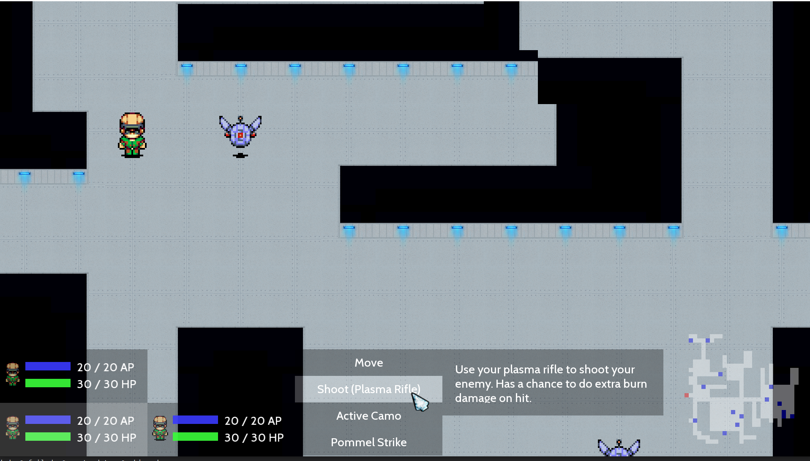

Who is that guy?
I'm Lukas Rosenberger, a third semester CompSci Student majoring in Game and Mixed Reality Engineering at FH Salzburg. I'm a huge fan of video games and am also currently pursuing a minor in Game Design.
Reality Ruckus
My latest project is a 2D tactical turn-based squad fighter called Realtity Ruckus. It has been developed in cooperation with 2 of my fellow students as part of our MMP2a (MultiMediaProject).
In Reality Ruckus, you are a hero who has been chosen to restore order to time and space following a catastrophic event which collapsed multiple realites into each other. Along the way you will team up with other heroes to face the various different enemies.
You will have to explore randomly generated areas and face a multitude of foes in order to collect fragments of an artifact, which is the only hope to restore order back to space and time.
Upon finding all artifact fragments in an area, your hero will have to travel to the next dimension, where he will have to face new challenges.

A screenshot of a combat in Reality Ruckus' Cthulhu setting
Project page for Reality Ruckus on the MMT/MMA portfolio (with download link!)
Yet Another Artillery Game
This is the game I made for my second semester multi media project (MMP). It's a basic Scorched Earth clone with different weapons and up to 8 player hotseat multiplayer.
The goal is to shoot the other tanks, taking the ballistic trajectory of the projectiles and the wind into account. Using the limited movement and the destructible environment to your advantage will also ensure that you will be the last tank standing.

A screenshot of Yet Another Artillery Game
Accelerator
This game was made during my first semester at FH. It's a clone of a flash game with the same name, the difference being that my version was made in JavaScript/WebGL with three.js.
In the game you fly through an endless tunnel, avoiding obstacles and flying through rings to gain speed boosts, all while you (and the background music) get continously faster.

A screenshot of Accelerator